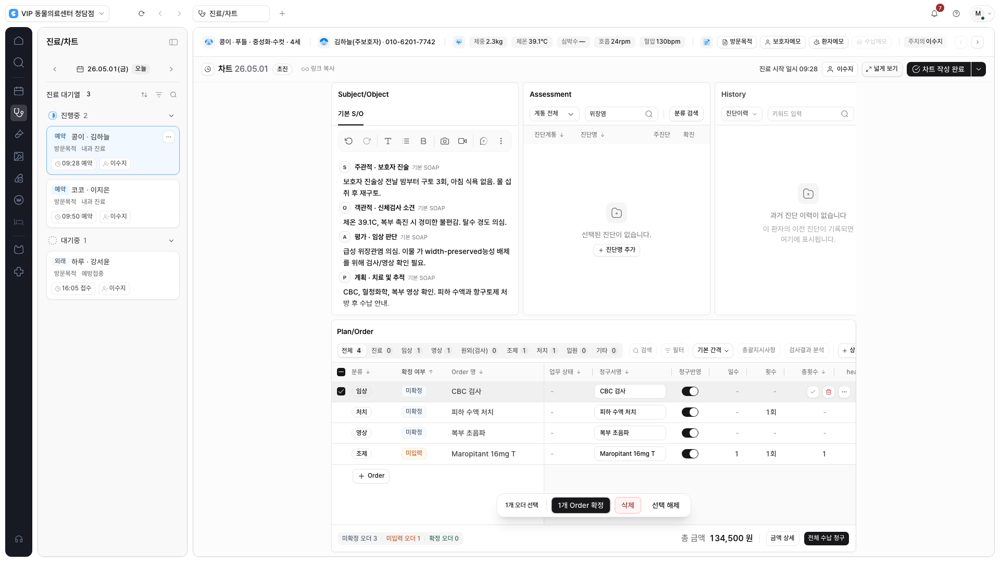
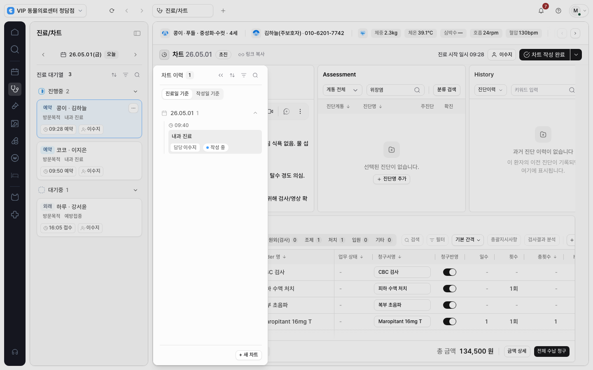
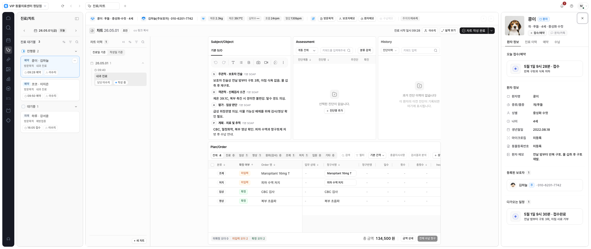

진료/차트에도
좁게·넓게 보기와 내부 이력을 적용했습니다.
로컬 구현 · 화면 검토 대기
차트 작성 영역은 1,040px로 모아 보고, 많은 Order 열을 확인할 때 넓게 펼칠 수 있습니다. 상단 차트 정보와 완료 버튼은 작업 화면 전체 폭을 사용합니다.
화면과 검증 데이터는 기존 합성 시나리오입니다. 운영 서비스에는 배포하지 않았습니다.
이번에 달라진 점
버튼은 대기열·이력·프로필을 제외한 실제 문서 공간이 1,040px보다 넓을 때만 나타납니다. 숨겨져도 선택한 보기 모드를 기억하며, 검사와 차트는 각자의 보기 설정을 유지합니다.
SOAP·Assessment·History의 기존 패널과 Order 열·글자 크기·밀도는 유지합니다. 공간이 부족한 부분은 내부 가로 스크롤로 확인할 수 있고, 패널을 따로 접어 작업 공간을 확보할 수도 있습니다.
같은 화면에서 폭 비교
아래 버튼으로 1,920px 화면의 좁게·넓게 보기를 비교할 수 있습니다. 테스트 입력과 선택 상태가 남아 있는 검증 캡처입니다.

이력과 환자 프로필
좁은 화면에서 이력을 열면 모달이 배경 조작을 막습니다. Tab 포커스는 이력 안에 머물고, Escape로 닫으면 열었던 버튼으로 돌아갑니다. 작성 중인 입력은 유지됩니다.

환자 프로필은 바깥 오른쪽 슬롯을 그대로 사용합니다. 차트에는 새로운 오른쪽 참고 기능을 추가하지 않았습니다.

검증 결과
브라우저 검증 94개 항목 통과. 차트 전체 73개, 새 차트 레이아웃 6개, Order 밀도 1개, 임상검사 공통 레이아웃 9개, 공유 오른쪽 패널 5개를 확인했습니다. 프로덕션 빌드·타입 검사·ESLint·문서·diff·보안 검사도 통과했습니다.
전체 실행에서는 93개가 통과했고, 추가한 세로 스크롤 테스트의 편집기 선택자를 수정한 뒤 해당 1개도 재검증에 통과했습니다. 차트 기능과 임상검사 회귀는 최종 프로덕션 빌드에서 검증했습니다.
| 확인 영역 | 검증 범위 |
|---|---|
| 입력과 보기 상태 | SOAP 입력, 진단 검색, Order 선택, 작성 영역 유지, 내부 스크롤, 모듈별 폭 설정 |
| 화면과 접근성 | 1366 / 1440 / 1600 / 1920 / 2560 및 960 CSS px, 모달 Tab·Escape·포커스 복귀, 모션 감소, 프로필 공존 |
| 기존 업무 동작 | Order 고정 열·밀도, 패널 접기, 영역 높이 조절, SOAP 편집, 빈 화면·권한 오류, 임상검사 공통 패널 회귀 |
| 정적 검사 | 변경 파일 ESLint, 타입 검사, 프로덕션 빌드, 문서 검사, diff 검사 |
960 CSS px는 확대에 따른 공간 부족을 확인하기 위한 대체 조건입니다. 실제 브라우저 200% 확대나 실환자 진료 업무 검증은 포함하지 않습니다. 실제 임상 사용자의 선호·효율 평가는 별도로 남아 있습니다.
적용 범위와 다음 단계
변경 파일은 차트 모듈과 패널 컴포넌트, 모듈 레지스트리, 공통 문서 레이아웃과 타입, 관련 브라우저 테스트와 폭 계약 문서입니다. 원래 작업 중인 기본 체크아웃은 건드리지 않았습니다.
API·DB·권한·진료 정책·실제 데이터와 저장·확정 로직은 이번 변경 범위에 포함하지 않습니다. 커밋·푸시·병합·배포도 수행하지 않았습니다.
다음 적용 대상은 조제/처치입니다. 기존 수행 상세 drawer와 표 구조를 확인한 뒤 같은 계약을 연결하는 순서입니다.